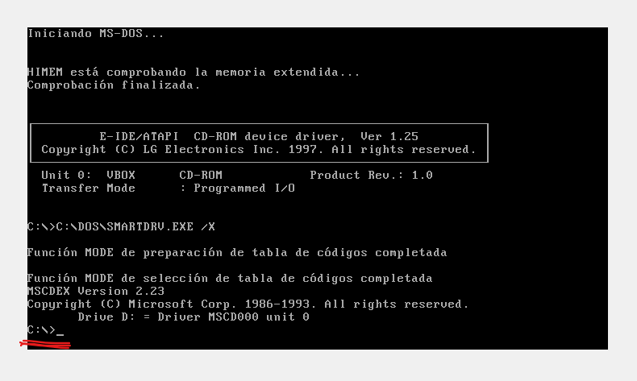
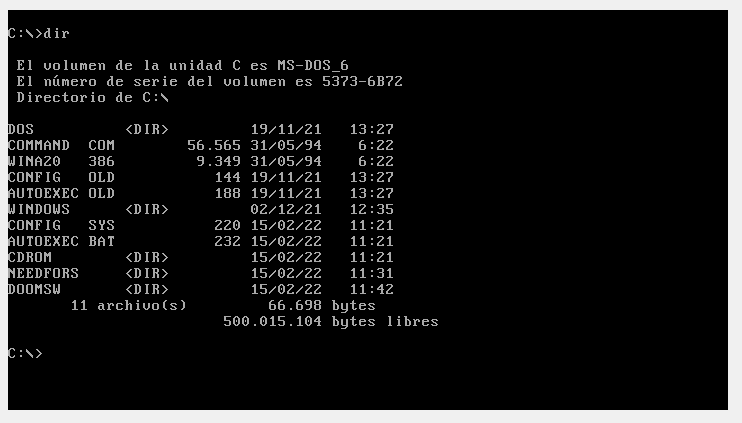
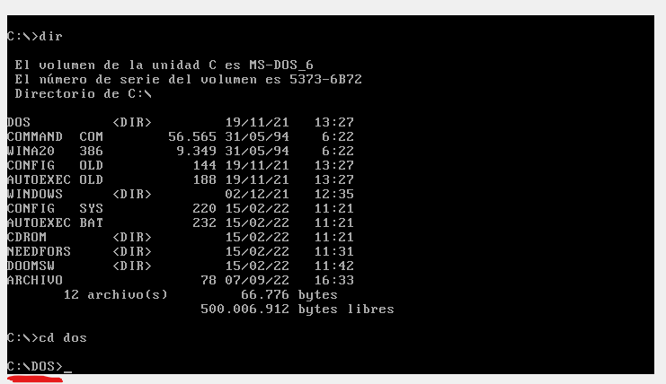
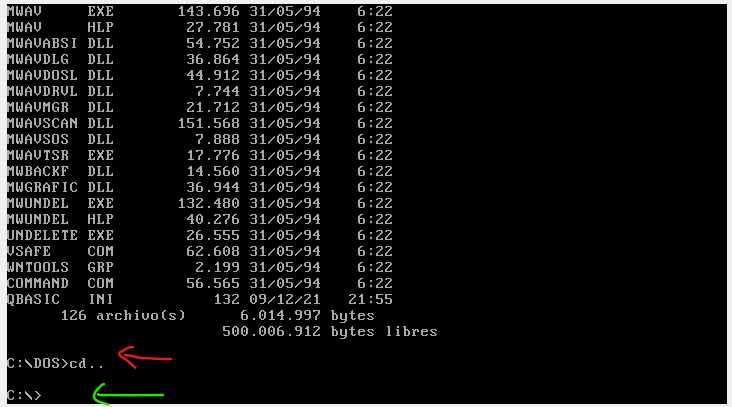
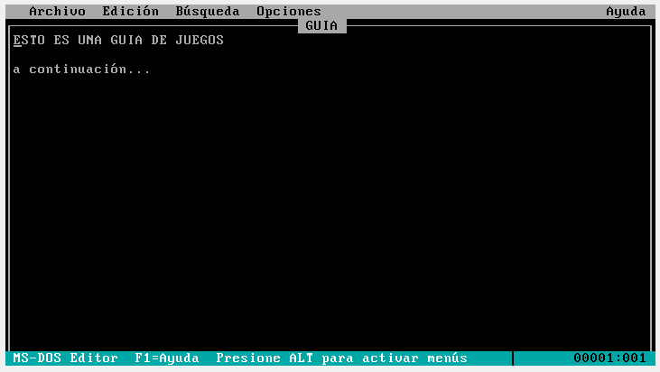
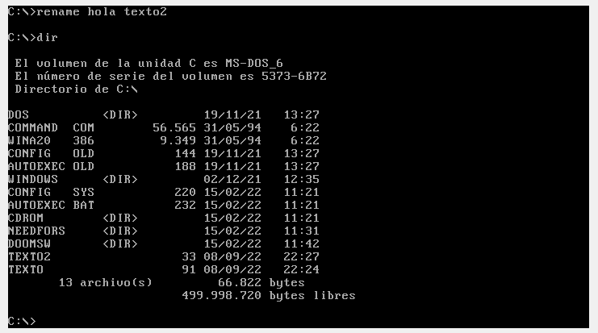
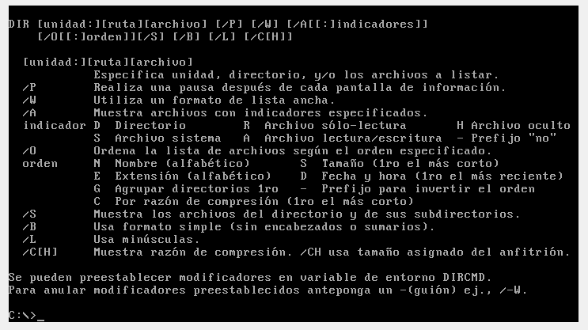
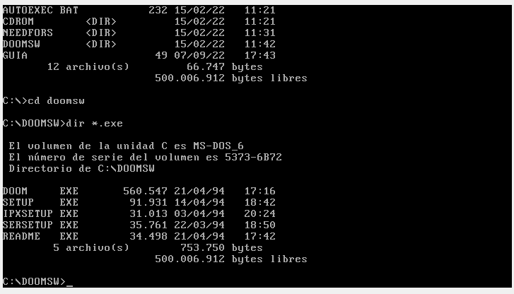

Movimiento entre unidades de disco
En la época, los ordenadores contaban con tres tipos de unidades de disco:
- Unidad de Disquete de 3 1/2, con la letra A:
- Unidad de Disquete de 5 1/4, con la letra B:
- Unidad de Disco Duro, con la letra C:
- Unidad Lector/Grabador de CD-ROM, con la letra D:
Esto se ha mantenido hasta nuetros dias, ya que si nos fijamos en la letra asignada a nuestro disco duro principal, continua siendo la letra C. Actualmente, las unidades de disquete de ambos tamaños han quedado obsoletas, puesto que su capacidad era muy reducida (1.44Mb y 720 Kb, respectivamente), y su velocidad de escritura y lectura era muy lenta. Estos se vieron superados por los dispositivos de almacenamiento USB, una solución barata y con velocidades mucho mayores. No obstante, pese a desaparecer hace años, esas dos letras se siguen reservando a ellas; es más, si conectasemos una disquetera a un ordenador con un Windows actual, como es por ejemplo Windows 11, esta seguiría ocupando la letra A: o B: ( para los curiosos, aqui dejo un articulo explicandolo mas a fondo). Lo que si seguimos manteniendo en algunos casos es la unidad de CD/DVD, aunque cada vez es mas dificil ver estos dispositivos montados por lo mismo que hemos expuesto para los disquetes.
En el caso del MS-DOS que instalaremos en nuestro caso, tendremos operativas de forma nativa las unidades A: y C:, es decir, el disco duro y la disquetera de 3 1/2. No obstante, necesitaremos simular la existencia de una unidad de CD/DVD para cargar determinado software (Ver página sobre software de MS-DOS). Cuando encendemos la maquina, por defecto apareceremos en el disco duro, como podremos comprobar en el interprete de comandos:

Para cambiar de unidad, escribiremos la letra de la unidad a la que queremos ir de la siguiente manera:
A:
La letra de la unidad puede ser tanto mayúscula como minúscula, que funcionará el cambio de unidad. Una vez escribimos esto, presionamos enter, y nos fijaremos que la letra señalada mas arriba ha cambiado, por lo que ya estamos en la unidad deseada. Este indicador tambien nos ayuda para saber en todo momento en que unidad estamos leyendo los datos.
IMPORTANTE!! EN CASO DE NO HABER NADA CARGADO EN LA UNIDAD, NO SE PUEDE ACCEDER A ELLA, por lo que antes de cambiar de unidad, tenemos que comprobar que hemos cargado algo en la unidad.
Leer el contenido de Disco
Para poder saber que archivos y directorios hay en una unidad, tenemos que escribir:
dir
Una vez introducido esto, nos aparecerán un conjunto de lineas en pantalla; cada una hace referencia a un archivo o a un directorio
dir" title="Resultado de utilizar el comando dir" width="600" height="350"/>
Como podemos observar en la imagen superior, encontramos varias lineas que nos muestran el contenido total de, en este caso, la unidad C:. En cada linea, encontramos la siguiente estructura:
| Nombre del archivo o directorio | | Extension de archivo | | Si es directorio | | Tamaño (bytes) | | Fecha de modificacion | | Hora de modificacion | |
| ------------------ | -------- | -------- | -------- | ------------- | -------- |
| DOS | DIR | 19/11/21 | 13:27 | ||
| ------------------ | -------- | -------- | -------- | ------------- | -------- |
| AUTOEXEC | BAT | 232 | 15/02/22 | 11:21 | |
| ------------------ | -------- | -------- | -------- | ------------- | -------- |
Directorios
El directorio lo podemos tratar como una carpeta en la que podemos guardar archivos de cualquier tipo. Si queremos entrar a él, debemos introducir lo siguiente:
cd (nombre del directorio)
Por ejemplo:
cd dos
Asi, veremos que el indicador de la unidad en la que nos encontramos cambia, y a este se le suma el nombre del directorio.
cd dir" title="Resultado de utilizar el comando cd dir" width="600" height="350"/>
Una vez dentro del directorio, podemos escribir otra vez el comando dir, y veremos que nos aparece en pantalla todo lo que hay dentro de este.
Para salir de un directorio (es decir, volver hacia atras un paso), debemos utilizar el siguiente comando:
cd..
cd.." title="Resultado de utilizar el comando cd.." width="600" height="350"/>
La flecha de color roja indica el punto de inicio, y una vez utilizado cd.. tenemos como resultado que hemos salido a el directorio de inicio (flecha verde)
Crear un directorio
Para crear un directorio, lo haremos de la siguiente manera:md nombredeldirectorio
Ejemplo:
md DirectorioNuevo
Destruir un directorio
Antes de destruir un directorio, debemos saber que existen dos posibilidades: o bien nuestro directorio esta vacío, o bien contiene archivos o subdirectorios dentro.El directorio se encuentra vacío
En este caso, unicamente tenemos que aplicar el siguiente comando:rmdir nombredeldirectorio
Por ejemplo:
rmdir DirectorioNuevo
El directorio se encuentra con archivos
El procedimiento en este caso es el mismo, pero antes debemos eliminar los archivos que se encuentran en su interior:del nombredeldirectorio
Ejemplo:
del DirectorioNuevo
Una vez hecho esto, realizamos el borrado al igual que en el caso de un directorio vacío.
Archivos
En los tiempos en los que MS-DOS estuvo vigente, las extensiones usadas mas comunmente eran pocas, por lo que de manera nativa, este solo reconoce un numero muy pequeño de ellas.
De estas que reconocía por defecto MS-DOS, nosotros utilizaremos unas pocas.
.BAT,.EXE y .COM
Estos dos tipos de archivo sirven para la instalacion o ejecución de software, al igual que en los windows actuales. Al acceder a ellos, nos aparecerá un instalador o directamente se abrirá el programa deseado. Para ejecutar estos escribiremos lo siguiente:nombredearchivo.bat , nombredearchivo.exe o nombredearchivo.com
Lectura mediante el uso de edit
En MS-DOS y a partir de cierta versión, el sistema cuenta con un editor de textos (MS-DOS Editor). Con el podemos editar cualquier archivo, sea de texto o no. Por ejemplo, si deseamos editar un archivo .txt, escribimos lo siguiente:edit nombredearchivo.txt
De esta manera, se nos abrirá lo siguiente:

Aqui podremos editar el texto de la manera deseada. Si queremos acceder a las opciones de la barra de navegación de la parte superior, tenemos que pulsar la tecla alt gr. Si aqui entramos al apartado archivo, tenemos varias opciones como guardar o salir del archivo. De la manera expuesta arriba, podemos editar cualquier archivo de cualquier extensión.
Lectura del contenido de un archivo mediante TYPE
Si deseamos leer el contenido de un archivo, sea texto o codigo, utilizaremos el comando TYPE:type nombredearchivo.txt
En este momento, todo el contenido del archivo se vera en pantalla.
Renombrar un archivo
Para renombrar un archivo, debemos:rename nombreactual nombrenuevo

Copias
En el apartado de copia, tenemos que tener en cuenta si lo que copiamos es un directorio o un archivo.
Si lo que queremos es copiar un directorio entero a otro, como copiar el contenido de la disquetera a un directorio en el disco duro, debemos:
copy a:\ c:\DirectorioDestino
Tenemos dos partes bien diferenciadas en el ejemplo: por un lado, encontramos la ruta donde se encuentran los archivos de origen (a:\), y por otro lado encontramos la ruta del directorio destino, que es a donde van a ser guardados los archivos (c:\DirectorioDestino).

Como vemos en la imagen superior, estamos copiando el contenido de la unidad D: en un directorio que hemos creado dentro de la unidad C:, llamado PRINCE. El comando de copia lo podemos aplicar desde el directorio en el que estemos situados; es decir, no hace falta desplazarnos hasta el directorio D: o C:\PRINCE en este caso, sino que podemos hacerlo desde donde nos encontremos en ese momento.
Si deseamos copiar un archivo a un directorio, lo que debemos hacer es sustituir en la instruccion de copia de directorio, la parte del directorio de salida por el nombre del archivo.

En este caso, la copia la estamos haciendo usando el camino relativo*, es decir, como nos encontramos justo donde se encuentra el directorio y el archivo, como podemos ver en la imagen inferior, podemos escribir simplemente el nombre de ambos.
* Mas información sobre rutas relativas y absolutas
Ayuda sobre un comando
En caso de que deseemos saber mas sobre un comando, y las funciones que posee, escribimos lo siguiente:
nombredelcomando/?
Por ejemplo:
dir/?

Entonces nos aparecen una serie de "opciones" que podemos utilizar con tal de adaptar el comando a lo que queremos. Por ejemplo, si queremos que salga la información del disco en formato ancho, haríamos:
dir/w
Otra opcion de gran utilidad es una que nos permite buscar segun la extension de archivo. Esto nos sirve, por ejemplo, para encontrar el .exe de un programa, y asi poder ejecutarlo:
dir *.exe
